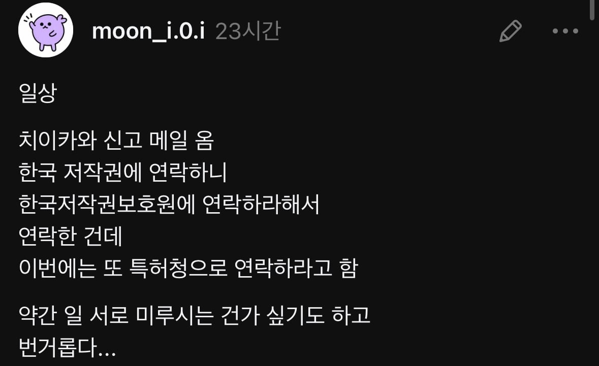
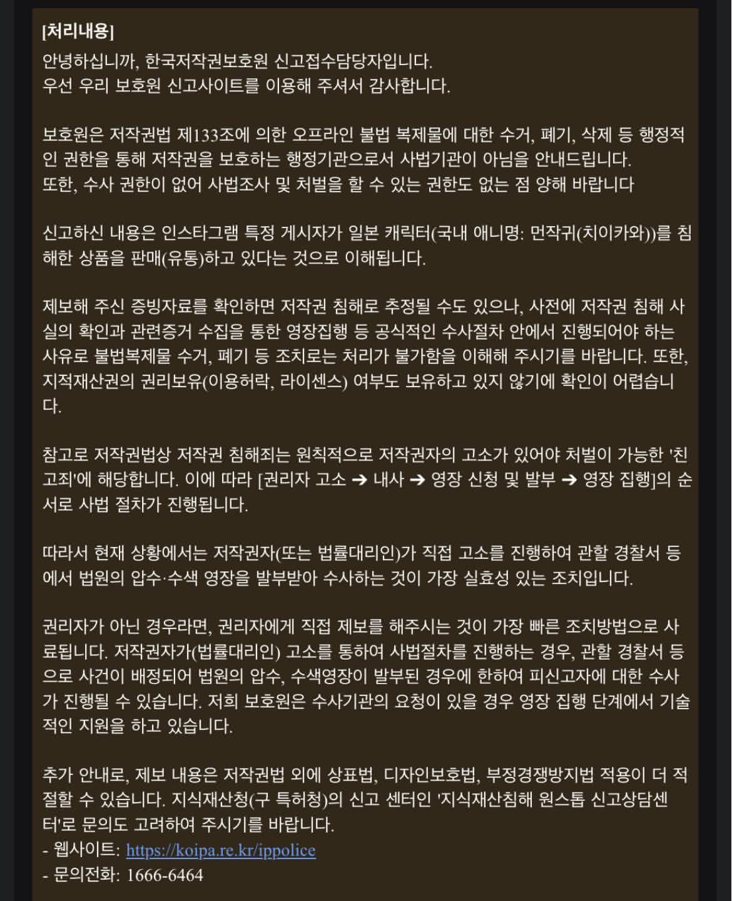

대원을 움직이거나 나가노가 움직여야 해결됨


대원을 움직이거나 나가노가 움직여야 해결됨
다 형사절차 얘기만 있는데 뭔 민사야...
친고죄라서 3자 고소 안된다고 적어둔거구만
그러니까 저작권자에게 알려주라고 하는거잖아. 실질적으로 벌금 이상 나오는 경우도 별로 없는데 그나마도 먼저 합의하면 형사처벌 받는 경우는 별로 없음
우리나라 저작권법 3자 고소 됨
저기는 반의사불벌죄가 아니라 친고죄라는데?
법무법인이 저작권 난사하고 다녀서 중학생이 자살한 사건이 왜 일어났겠어
영리활동부분 3자 고소 가능해
법무법인이 수임받아서 한거겠지..
해당사건이 논란된건 원저작자한테 이임받은게 아니라 3자 고소 조항가지고 난사해서 논란된거임
사실이면 신고야 그렇다치고 합의를 자기와 종용하면 사기아님?
영리목적이면 비친고죄
비영리면 친고죄
라서 그래
변호사를 고용하세요
저런 건 뭐 작가한테 직접 제보하는게 빠를 듯
그리고 한국에서 관리하는 회사는 저거 빨리 처리하는게 좋을텐데
작가한테까지 제보 들어가면 문제 생길 거 뻔하지 않나
먼작귀 한국측이 대원인데 사람들이 이미 나가노한테도 제보 존나게 했다함
이미 했구만 근데 나였으면 저 가게가 먼작귀 말고 뭐 파는지 확인해서
다른 것도 제대로 팔고 있는 건지 찔러볼 듯 ㅋㅋ
저작권이라 저작권 소유자가 움직여야지
대원이 너무 짜잘한건 안움직이나보네
사실 이미 움직이고 있는 거 아닐까?
저건 대원이나 작가가 더 빠를거같은데
나가노선생 농담곰 저작권뺏긴거때문에 저작권문제로는 날이 좀 서있을텐데
ㅈㄴ 친절하게 설명해줬는데 미루는거 같다 ㅇㅈㄹ 하는 것도 정신병인듯
지능이 떨어져서그런거지뭐..
3줄 이상의 긴 글은 안 읽어서 그런다구
대원도 귀찮아서 안할수도 있음
대원 팬번역은 때려잡더니 이런건 왜 가만있냐
굿즈는 자기네 콩고물이 안떨어지나보지ㅋㅋㅋ
대원 일하는거 아는 사람은 기대 없지...
저작권 가진사람이 해결 의지가 있어야 고소가 되는 부분이라서
무슨일임?
대원은 이런거 조또 일 안함
나가노한테 다이렉트로 찔러야됨
니나노 작가 빨리 정의구현
나도 인터넷에서 헌법 관련된 허위사실 유포 글 있어서 정부24 통해서 사실여부 확인해달라고 민원넣었는데 여기저기 많이도 토스하더라 ㅋㅋ
결국 민원 처리기간 사이에 원글 게시자가 글을 삭제해버렸고 민원 답변은 "원글이 없어서 몰루겠어요~"였음. 심지어 내가 캡쳐본을 첨부파일로 넣어놨는데도 그럼 ㅋㅋ
근데 일본 먼작귀 만화는 무료 공개 아님?
그 만화가 공짜라고 캐릭터도 공짜가 되진 않음
저건 굿즈 같은 거 때문에 그러는 거야?
만화를 불법공유한게 아니라 자기혼자 콜라보하고 굿즈만들어서 유료로 팔았어
그럼 쳐맞아야지ㅇㅇ
어차피 민사로 해결할 일이니까 저작권자에게 협의하라는 뜻이지 뭐. 저 사람이 실제로 허락을 받았는지 아닌지 여부를 저작권보호원이 어찌 아냐. 모든 계약을 다 저작권보호원에 신고라도 하란 말이냐